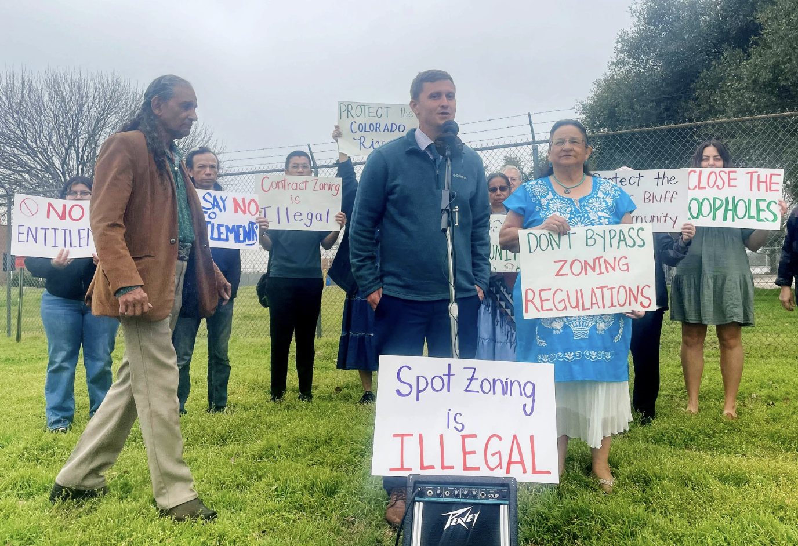

The Daily Clarion
Monday, February 26, 2024 - Austin, TX

Breaking News for Today
Students worry UT-Austin is taking Texas’ new DEI ban too far
Students gather at the University of Texas at Austin's South Mall on Feb. 22, 2024. Credit: Maria Crane/The Texas Tribune
Groups sue Austin officials over plan to redevelop dairy plant site
Roughly a dozen representatives from local neighborhood and environmental groups gathered outside the dairy plant Monday to announce a lawsuit they filed against the city over the redevelopment of the land. Credits: Audrey McGlinchy/KUT News